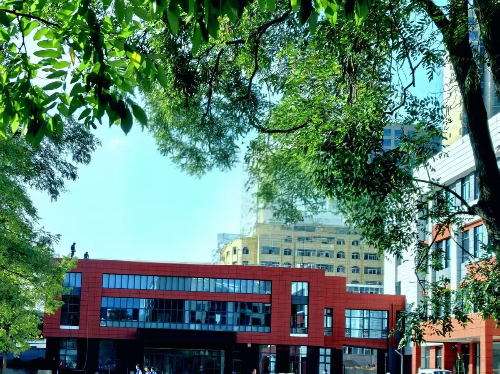
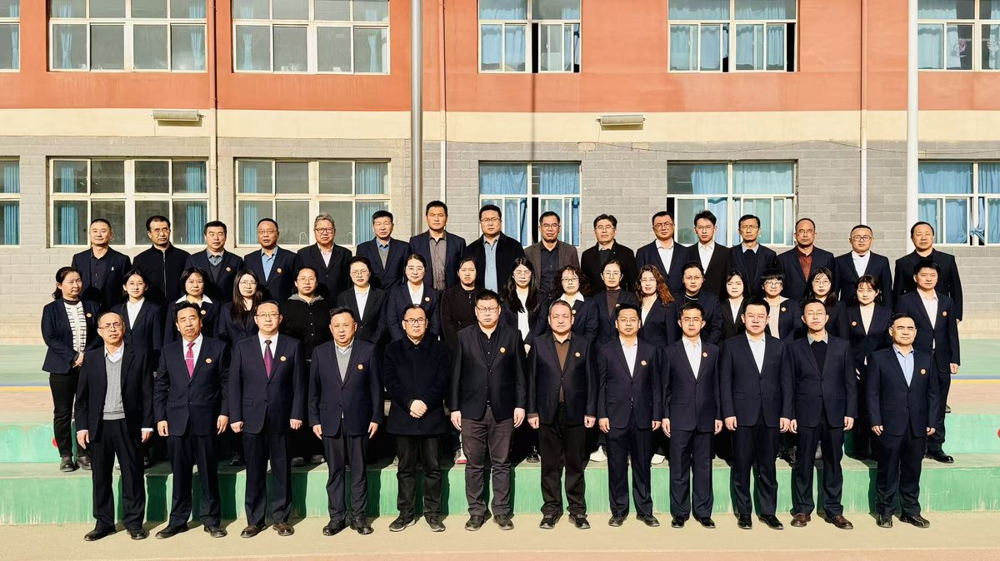
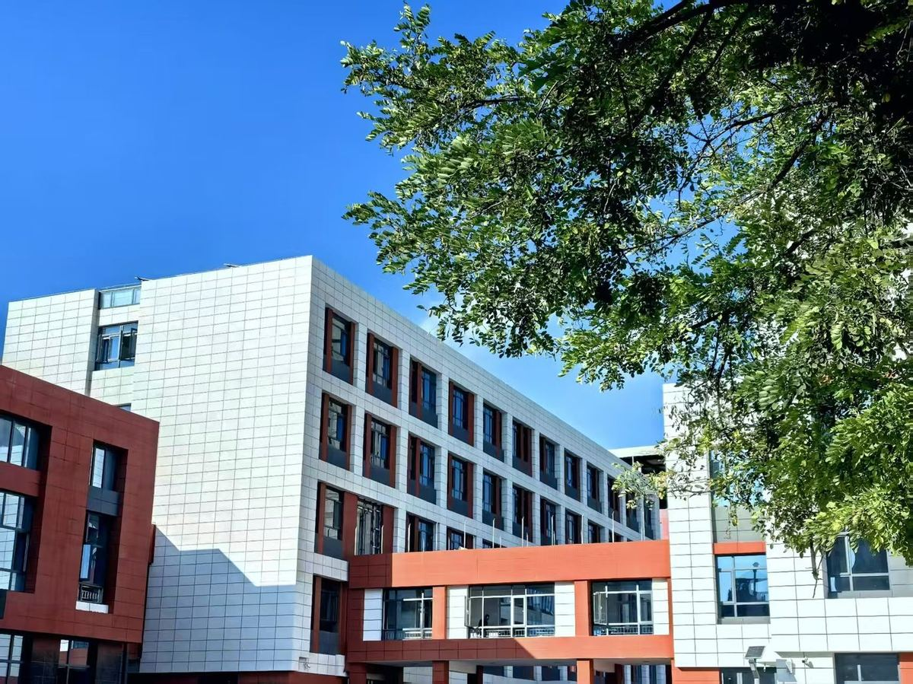
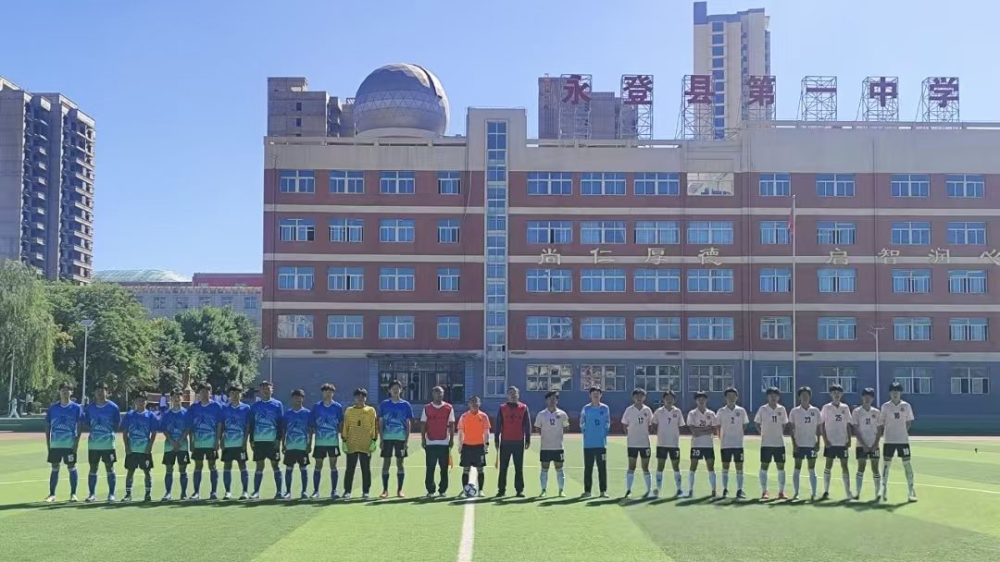
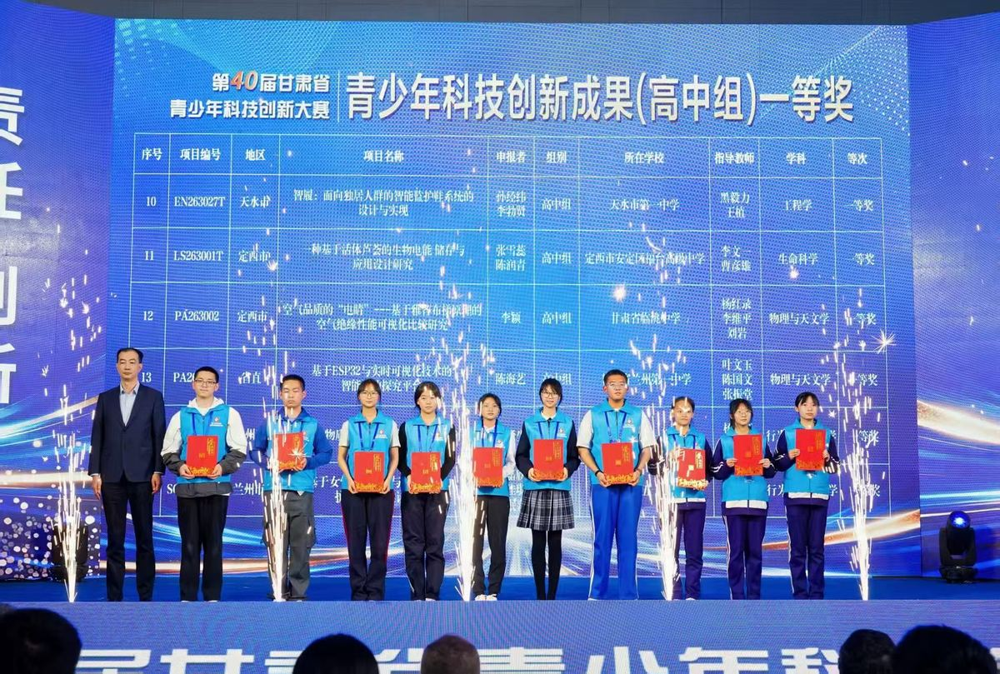
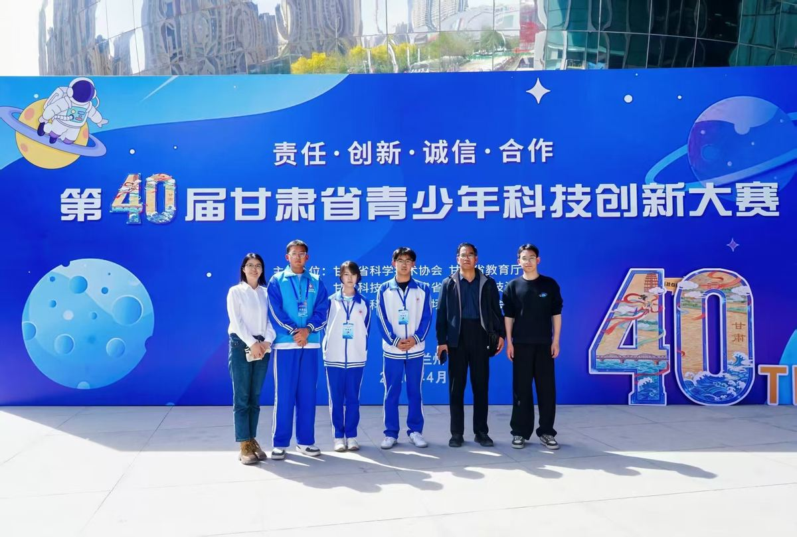

永登县第一中学创建于 1942 年，是一所在县内外颇有影响的县属重点中学，2001 年被评为市级示范性高中。学校占地面积 105.93 亩，拥有完善的教学设施、充足的运动场地，各种功能室配备齐全。

学校现有教学班 47 个，学生 2325 名。教职工 200 人，其中正高级职称教师 5 人，副高级职称教师 80 人，中级职称教师 77 人。

学校占地面积 105.93 亩，拥有完善的教学设施、充足的运动场地，各种功能室配备齐全。

学校有图书馆，其藏书达 11 万余册，报刊杂志 200 多种；有学生餐厅，面积达 2000 平方米；有 400 米 8 跑道标准田径场和悬浮式地板铺设的校园广场。

在悠久的办学历史中，学校形成了“严爱勤实”的校训和以“润”文化为核心的校园文化体系，坚持“润以养德、润以启智、润以育美、润以雅正”。质量强校、科研兴校、文化润校已蔚然成风。
近年来，学校教育教学质量稳步提升，连创佳绩。
学校重视学生科学素养与创新能力的培养。在 第 40 届甘肃省青少年科技创新大赛 中，我校学子参赛项目荣获青少年科技创新成果（高中组）一等奖。


学校曾先后获得省、市、县级教育质量优秀奖，并已连续七年被评为“永登县教育系统先进集体”。
学校于 2023 年 8 月加入兰州市第五十八中学教育集团，在集团校平台的支持下，通过优化制度管理、精细化开展教学评价、联合教研和导师制等工作，不断推进学校高质量发展。
永登一中正以“强省会”战略行动为契机，乘县中振兴之东风，积极践行先进的教育理念，规范办学行为，推进科学民主管理，落实课程育人，加强课堂教学改革，改善办学条件，推动学校特色发展。在新一届领导班子“高质量现代化发展”战略规划的引领下，学校必将发展成为优质的县域省级示范性高中。